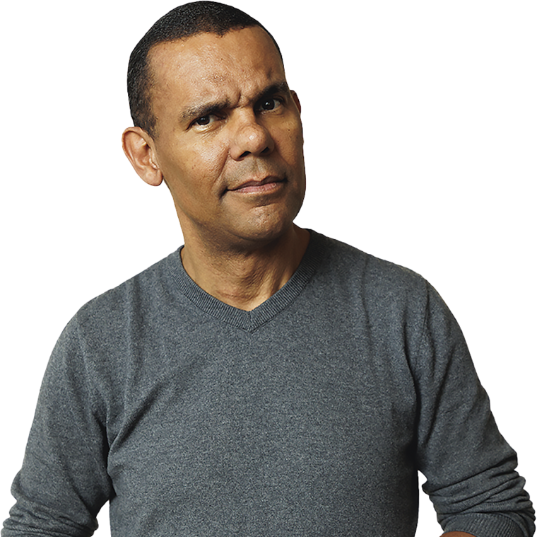
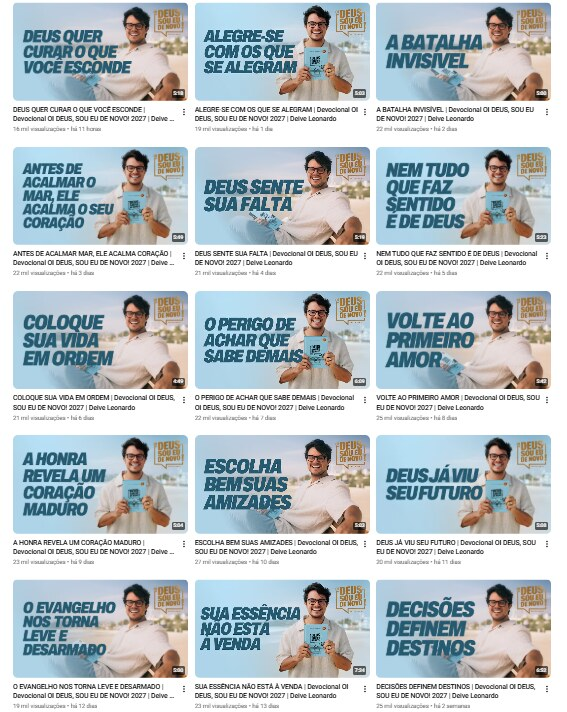

De conteúdo de nicho a uma autoridade gigantesca no YouTube.
…sem perder a profundidade do conteúdo e a retenção do público.
Unimos análise de dados com produção de alta performance para impulsionar a autoridade do canal.
Títulos e thumbs focados em alta taxa de clique
CTRRoteiros e retenção otimizados para audiência engajada
RETENÇÃOSEO completo para indexação estratégica dos 1.281 vídeos
SEOO segredo para bater centenas de milhões de visualizações está na combinação de conteúdo relevante com estratégias precisas de distribuição e posicionamento.
